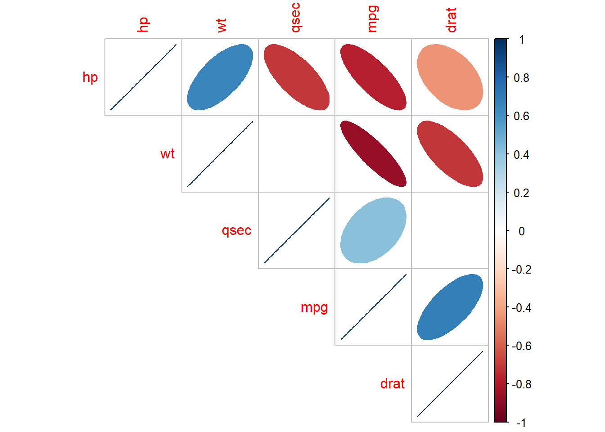
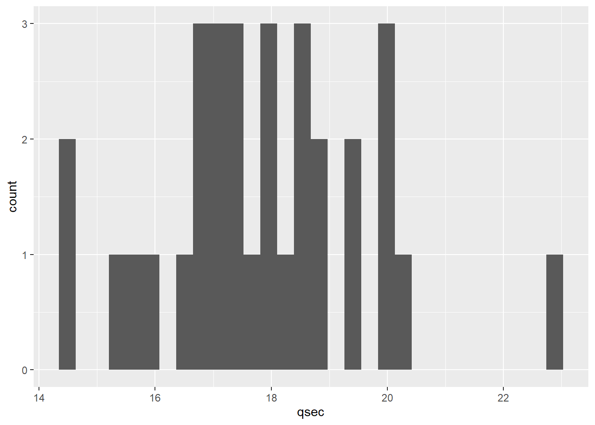
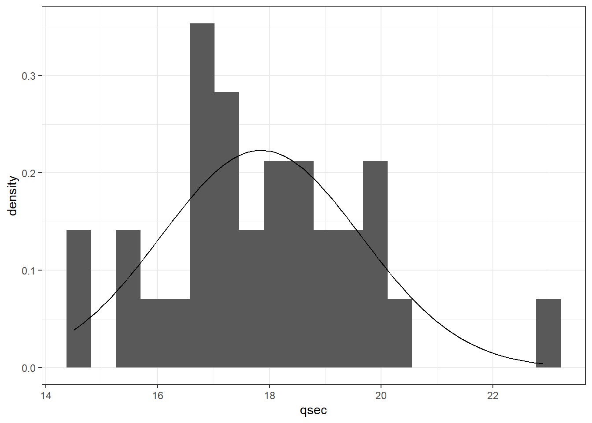
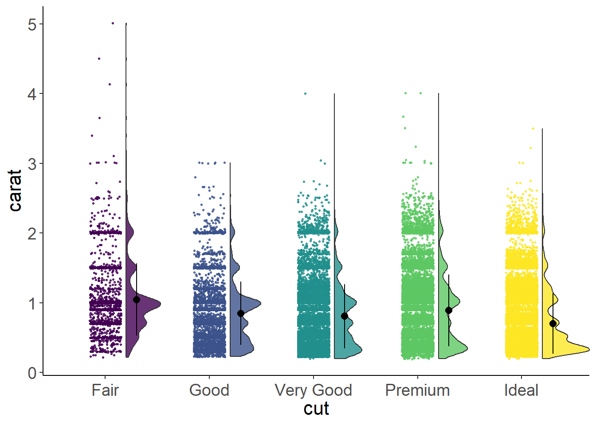
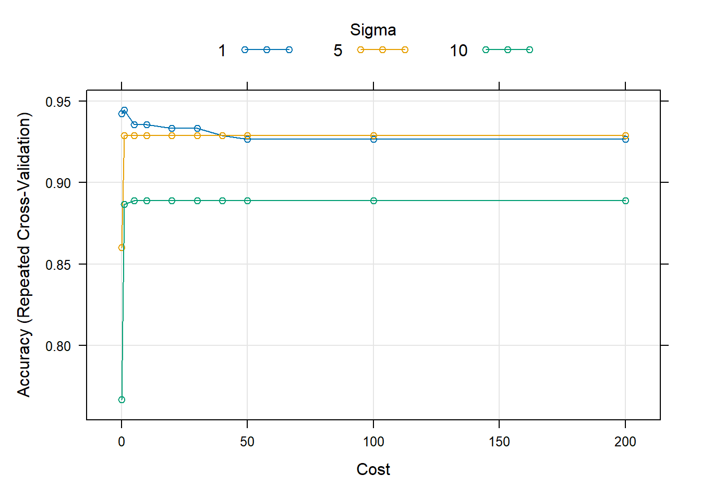
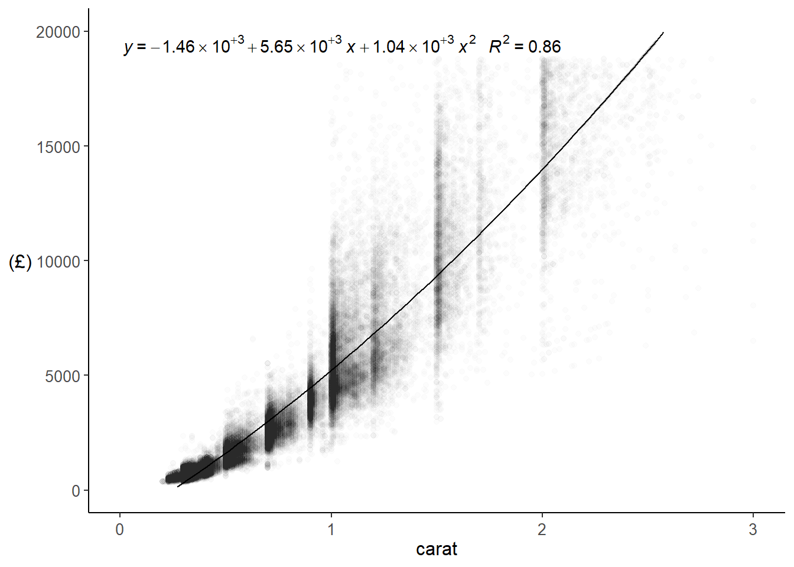

Chapter 6 Data Visualisation
Tables and graphs, survival plots, missing values.
6.1 Packages needed
library(arsenal) # for summary tables
library(summarytools) # for summary tables
library(gridExtra) # print multiple plots as grid
library(ggpmisc) # add formulas and p values to scatterplots
library(corrplot) #plotting correlations
library(Hmisc) #impute values
library(naniar) # deal with NAs
library(geosphere)
library(tidyverse) # data handling and viz
library(janitor) #dataframe import cleaning
library(knitr) #nice html tables
library(kableExtra) # nicer knitr tables
library(broom)
library(readr) # load csv stored data
library(geosphere) # for calc daylength
#library(RColorBrewer)
library(viridis)
library(reshape2)
library(ggrepel) # label points on ggplot
source("https://gist.githubusercontent.com/benmarwick/2a1bb0133ff568cbe28d/raw/fb53bd97121f7f9ce947837ef1a4c65a73bffb3f/geom_flat_violin.R")6.2 Summary Tables
6.2.1 Summarise by group
data(mtcars)
kable(mtcars %>% group_by(cyl) %>% summarise(Ave=mean(hp), StDev=sd(hp))) %>%
kable_styling(full_width = FALSE) %>% kable_minimal()| Ave | StDev |
|---|---|
| 146.6875 | 68.56287 |
6.2.2 Multiple functions, variables
# make sure brackets are correct
df.sum <- mtcars %>% select(mpg,cyl,hp) %>%
dplyr::summarise(across(everything(),list(mean=mean,sd=sd)))
kable(df.sum,digits=2) %>% kable_styling(full_width = FALSE) %>%
kable_minimal() # perform the analysis| mpg_mean | mpg_sd | cyl_mean | cyl_sd | hp_mean | hp_sd |
|---|---|---|---|---|---|
| 20.09 | 6.03 | 6.19 | 1.79 | 146.69 | 68.56 |
df.longer <- df.sum%>% pivot_longer(col=everything(),
names_to = c("Attribute",".value"),
names_sep = "_")
kable(df.longer,digits=2) %>%
kable_styling(full_width = FALSE) %>%
kable_minimal() # pivot longer the analysis to make it readable| Attribute | mean | sd |
|---|---|---|
| mpg | 20.09 | 6.03 |
| cyl | 6.19 | 1.79 |
| hp | 146.69 | 68.56 |
6.2.3 ‘Arsenal’ summary table
tab1 <- tableby(cyl~gear+hp+wt,data=mtcars)
summary(tab1, text=TRUE, digits=2, digits.p=2, digits.pct=1)| 4 (N=11) | 6 (N=7) | 8 (N=14) | Total (N=32) | p value | |
|---|---|---|---|---|---|
| gear | 0.01 | ||||
| - Mean (SD) | 4.09 (0.54) | 3.86 (0.69) | 3.29 (0.73) | 3.69 (0.74) | |
| - Range | 3.00 - 5.00 | 3.00 - 5.00 | 3.00 - 5.00 | 3.00 - 5.00 | |
| hp | < 0.01 | ||||
| - Mean (SD) | 82.64 (20.93) | 122.29 (24.26) | 209.21 (50.98) | 146.69 (68.56) | |
| - Range | 52.00 - 113.00 | 105.00 - 175.00 | 150.00 - 335.00 | 52.00 - 335.00 | |
| wt | < 0.01 | ||||
| - Mean (SD) | 2.29 (0.57) | 3.12 (0.36) | 4.00 (0.76) | 3.22 (0.98) | |
| - Range | 1.51 - 3.19 | 2.62 - 3.46 | 3.17 - 5.42 | 1.51 - 5.42 |
6.2.4 Summarytools tables
descr(mtcars, stats = c("mean", "sd"), transpose = TRUE, headings = FALSE)##
## Mean Std.Dev
## ---------- -------- ---------
## am 0.41 0.50
## carb 2.81 1.62
## cyl 6.19 1.79
## disp 230.72 123.94
## drat 3.60 0.53
## gear 3.69 0.74
## hp 146.69 68.56
## mpg 20.09 6.03
## qsec 17.85 1.79
## vs 0.44 0.50
## wt 3.22 0.98kable(descr(mtcars, stats = c("mean", "sd", "n.valid"), transpose = TRUE,
headings = FALSE),digits = 3) %>%
kable_styling(full_width = FALSE)%>% kable_minimal()| Mean | Std.Dev | N.Valid | |
|---|---|---|---|
| am | 0.406 | 0.499 | 32 |
| carb | 2.812 | 1.615 | 32 |
| cyl | 6.188 | 1.786 | 32 |
| disp | 230.722 | 123.939 | 32 |
| drat | 3.597 | 0.535 | 32 |
| gear | 3.688 | 0.738 | 32 |
| hp | 146.688 | 68.563 | 32 |
| mpg | 20.091 | 6.027 | 32 |
| qsec | 17.849 | 1.787 | 32 |
| vs | 0.438 | 0.504 | 32 |
| wt | 3.217 | 0.978 | 32 |
6.2.5 Visual summary of data
Options are for markdown
dfSummary(mtcars, plain.ascii = FALSE, style = "grid",
graph.magnif = 0.5, valid.col = FALSE, tmp.img.dir = "/tmp")## temporary images written to 'C:\tmp'6.2.6 Data Frame Summary
6.2.6.1 mtcars
Dimensions: 32 x 11
Duplicates: 0
| No | Variable | Stats / Values | Freqs (% of Valid) | Graph | Missing |
|---|---|---|---|---|---|
| 1 | mpg [numeric] |
Mean (sd) : 20.1 (6) min < med < max: 10.4 < 19.2 < 33.9 IQR (CV) : 7.4 (0.3) |
25 distinct values |  |
0 (0.0%) |
| 2 | cyl [numeric] |
Mean (sd) : 6.2 (1.8) min < med < max: 4 < 6 < 8 IQR (CV) : 4 (0.3) |
4 : 11 (34.4%) 6 : 7 (21.9%) 8 : 14 (43.8%) |
 |
0 (0.0%) |
| 3 | disp [numeric] |
Mean (sd) : 230.7 (123.9) min < med < max: 71.1 < 196.3 < 472 IQR (CV) : 205.2 (0.5) |
27 distinct values |  |
0 (0.0%) |
| 4 | hp [numeric] |
Mean (sd) : 146.7 (68.6) min < med < max: 52 < 123 < 335 IQR (CV) : 83.5 (0.5) |
22 distinct values |  |
0 (0.0%) |
| 5 | drat [numeric] |
Mean (sd) : 3.6 (0.5) min < med < max: 2.8 < 3.7 < 4.9 IQR (CV) : 0.8 (0.1) |
22 distinct values |  |
0 (0.0%) |
| 6 | wt [numeric] |
Mean (sd) : 3.2 (1) min < med < max: 1.5 < 3.3 < 5.4 IQR (CV) : 1 (0.3) |
29 distinct values |  |
0 (0.0%) |
| 7 | qsec [numeric] |
Mean (sd) : 17.8 (1.8) min < med < max: 14.5 < 17.7 < 22.9 IQR (CV) : 2 (0.1) |
30 distinct values |  |
0 (0.0%) |
| 8 | vs [numeric] |
Min : 0 Mean : 0.4 Max : 1 |
0 : 18 (56.2%) 1 : 14 (43.8%) |
 |
0 (0.0%) |
| 9 | am [numeric] |
Min : 0 Mean : 0.4 Max : 1 |
0 : 19 (59.4%) 1 : 13 (40.6%) |
 |
0 (0.0%) |
| 10 | gear [numeric] |
Mean (sd) : 3.7 (0.7) min < med < max: 3 < 4 < 5 IQR (CV) : 1 (0.2) |
3 : 15 (46.9%) 4 : 12 (37.5%) 5 : 5 (15.6%) |
 |
0 (0.0%) |
| 11 | carb [numeric] |
Mean (sd) : 2.8 (1.6) min < med < max: 1 < 2 < 8 IQR (CV) : 2 (0.6) |
1 : 7 (21.9%) 2 : 10 (31.2%) 3 : 3 ( 9.4%) 4 : 10 (31.2%) 6 : 1 ( 3.1%) 8 : 1 ( 3.1%) |
 |
0 (0.0%) |
6.3 Correlation matrix
6.3.1 Ellipse style
corrdata <- mtcars %>% select(-c(cyl,disp,vs,am,gear,carb))
corr1 <- Hmisc::rcorr(as.matrix(corrdata))
corrp = cor.mtest(corrdata, conf.level = 0.95)
P <- corrp$p
M <- corr1$r
#M
#colnames(M) <- c("mpg", "HP", "Axle Ratio", "Weight (kPounds)", "Quarter Mile (s)")
#rownames(M) <- c("mpg", "HP", "Axle Ratio", "Weight (kPounds)", "Quarter Mile (s)")
p_mat <- corrp$p
corr <- corrplot(M, type = "upper",method="ellipse", order = "hclust",
p.mat = p_mat, sig.level = 0.05, insig = "blank")

Figure 6.1: Correlation Plot
- Red is -ve correlation
- Blue is + ve correlation
- Blank is no correlation
6.4 Graphing
6.4.1 Basic distribution Histogram
plot1 <- mtcars %>% ggplot(aes(qsec))+geom_histogram()
plot1## `stat_bin()` using `bins = 30`. Pick better value with `binwidth`. ### Distribution + Normal line
plot1 <- mtcars %>% ggplot(aes(qsec))
# plot1+geom_histogram()
# add normal plot
plot1 + geom_histogram(aes( y=..density..),bins = 20)+
stat_function(fun = dnorm, args = list(mean =mean(mtcars$qsec), sd=sd(mtcars$qsec))) +
theme_bw()# ..density.. changes y axis to density, not count. stat function defines normal
# line based on data provided.6.4.2 multiple plot of all distributions
mtcars %>% keep(is.numeric) %>% gather() %>% ggplot(aes(value)) +
facet_wrap(~ key, scales = "free") + geom_histogram(bins = 15)
6.4.3 x*y scatterplot with linear or polynomial regression
plot2<- mtcars %>% ggplot(aes(x=wt,y=qsec))
plot2a <- plot2 +geom_point()+stat_smooth(method='lm',formula=y~x) + theme_bw()
plot2b <- plot2 +geom_point()+stat_smooth(method='lm',formula = y ~ poly(x, 2)) + theme_bw()
plot2c <- plot2 +geom_point()+stat_smooth(method='lm',formula = y ~ poly(x, 3)) + theme_bw()
plot2d <- plot2 +geom_point()+stat_smooth(method='lm',formula = y ~ poly(x, 4)) + theme_bw()
grid.arrange(plot2a,plot2b,plot2c,plot2d,nrow=2,ncol=2)6.4.4 Add formula to plot.
my.formula <- y ~ x
a <- plot2 +geom_point()+geom_smooth(method='lm',formula=my.formula)+
stat_poly_eq(formula = my.formula, aes(label = paste(..eq.label.., ..rr.label..,
sep = "~~~")), parse = TRUE) +
theme_bw()
my.formula2 <- y ~ poly(x, 2)
b <- plot2 +geom_point()+geom_smooth(method='lm',formula=my.formula2)+
stat_poly_eq(formula = my.formula2, aes(label = paste(..eq.label.., ..rr.label..,
sep = "~~~")), parse = TRUE) +
theme_bw()
grid.arrange(a,b,nrow=1)
6.4.5 Raincloud plots (ggplot)
library(plyr)
library(dplyr)6.4.5.1 custom theme creation
theme_rain = theme(
text = element_text(size = 10),
axis.title.x = element_text(size = 16),
axis.title.y = element_text(size = 16),
axis.text = element_text(size = 14),
axis.text.x = element_text(angle = 0, vjust = 0.5),
legend.title=element_text(size=16),
legend.text=element_text(size=16),
legend.position = "right",
plot.title = element_text(lineheight=.8, face="bold", size = 16),
panel.border = element_blank(),
panel.grid.minor = element_blank(),
panel.grid.major = element_blank(),
axis.line.x = element_line(colour = 'black', size=0.5, linetype='solid'),
axis.line.y = element_line(colour = 'black', size=0.5, linetype='solid'))6.4.5.3 row names as real column
mtcars <- tibble::rownames_to_column(mtcars, "car_name")
mtcars <- mtcars %>% mutate(cyl=as_factor(cyl))6.4.5.4 calc summary data
data("diamonds")
sumld<- ddply(diamonds, ~cut, summarise, mean = mean(carat), median = median(carat),
lower = lb(carat), upper = ub(carat))
kable(head(sumld)) %>% kable_minimal()| cut | mean | median | lower | upper |
|---|---|---|---|---|
| Fair | 1.0461366 | 1.00 | 0.5297323 | 1.562541 |
| Good | 0.8491847 | 0.82 | 0.3951303 | 1.303239 |
| Very Good | 0.8063814 | 0.71 | 0.3469460 | 1.265817 |
| Premium | 0.8919549 | 0.86 | 0.3766933 | 1.407217 |
| Ideal | 0.7028370 | 0.54 | 0.2699607 | 1.135713 |
6.4.6 raincloud plot (diamonds)
g <- ggplot(data = diamonds, aes(y = carat, x = cut, fill = cut)) +
geom_flat_violin(position = position_nudge(x = .2, y = 0), alpha = .3) +
geom_point(aes(y = carat, color = cut), position = position_jitter(width = .15), size = .5, alpha = 0.3) +
geom_boxplot(width = .2, guides = FALSE, outlier.shape = NA, alpha = 0.9) +
expand_limits(x = 5.25) +
scale_color_viridis_d() +
scale_fill_viridis_d() +
coord_flip() +
theme_bw() +
theme_rain## Warning in geom_boxplot(width = 0.2, guides = FALSE, outlier.shape = NA, : Ignoring unknown parameters: `guides`g### Alternative raincloud
#calculations needed
sumld<- ddply(diamonds, ~cut, summarise, mean = mean(carat), median = median(carat), lower = lb(carat), upper = ub(carat))
g <- ggplot(data = diamonds, aes(y = carat, x = cut, fill = cut)) +
geom_flat_violin(position = position_nudge(x = .2, y = 0), alpha = .8) +
geom_point(aes(y = carat, color = cut), position = position_jitter(width = .15), size = .5, alpha = 0.8) +
geom_point(data = sumld, aes(x = cut, y = mean), position = position_nudge(x = 0.3), size = 2.5) +
geom_errorbar(data = sumld, aes(ymin = lower, ymax = upper, y = mean), position = position_nudge(x = 0.3), width = 0) +
expand_limits(x = 5.25) +
guides(fill = FALSE) +
guides(color = FALSE) +
scale_color_viridis_d() +
scale_fill_viridis_d() +
theme_bw() +
theme_rain
gFigure 6.2: Raincoud plot of means
6.4.7 Scatterplot theme
theme_scatter = theme(
text = element_text(size = 10),
axis.title.x = element_text(size = 12),
axis.title.y = element_text(size = 12, angle = 0,vjust = .5),
axis.text = element_text(size = 10),
axis.text.x = element_text(angle = 0, vjust = 0.5),
legend.title=element_text(size=12,hjust = .5),
legend.text=element_text(size=10),
#legend.position = "right",
legend.background = element_rect(colour='light grey'),
plot.title = element_text(lineheight=.8, face="bold", size = 16),
panel.border = element_blank(),
panel.grid.minor = element_blank(),
panel.grid.major = element_blank(),
axis.line.x = element_line(colour = 'black', size=0.5, linetype='solid'),
axis.line.y = element_line(colour = 'black', size=0.5, linetype='solid'))6.4.8 Scatterplots
sp <- diamonds %>% ggplot(aes(x=carat,y=price))
sp1 <- sp+geom_point()
sp2 <- sp+geom_point() +theme_bw()
sp3 <- sp+geom_point() +theme_bw() +theme_scatter
sp4 <- sp+geom_point(alpha=.01)+ylab('(£)') +theme_bw() +theme_scatter
grid.arrange(sp1,sp2,sp3,sp4,nrow=2,ncol=2)Figure 6.3: Scatterplots
6.4.9 make axis logarithmic
sp5 <- sp+geom_point(alpha=.01)+ylab('(£)') +theme_bw() +theme_scatter
sp5+ scale_x_continuous(trans='log10') +
scale_y_continuous(trans='log10')
6.4.10 add a trendline
my.formula <- y ~ x # calc formula for display
sp5+ylim(0,20000)+xlim(0,3)+geom_smooth(method='lm',formula =my.formula,
colour='black', size=.4,alpha=.6)+
stat_poly_eq(formula = my.formula,
aes(label = paste(..eq.label.., ..rr.label..,
sep = "~~~")), parse = TRUE)## Warning: Removed 32 rows containing non-finite values (`stat_smooth()`).## Warning: Removed 32 rows containing non-finite values (`stat_poly_eq()`).## Warning: Removed 32 rows containing missing values (`geom_point()`).## Warning: Removed 8 rows containing missing values (`geom_smooth()`).Figure 6.4: linear Trendline
6.4.11 add a trendline
formula <- y ~ poly(x, 2,raw=TRUE) # calc formula for display
sp5+ylim(0,20000)+xlim(0,3)+geom_smooth(method='lm',formula =formula,
colour='black', size=.4,alpha=.6)+
stat_poly_eq(formula = formula,
aes(label = paste(..eq.label.., ..rr.label..,
sep = "~~~")), parse = TRUE)## Warning: Removed 32 rows containing non-finite values (`stat_smooth()`).## Warning: Removed 32 rows containing non-finite values (`stat_poly_eq()`).## Warning: Removed 32 rows containing missing values (`geom_point()`).## Warning: Removed 14 rows containing missing values (`geom_smooth()`).Figure 6.5: Polynomial trendline
6.4.12 add multiple trendlines
sp <- diamonds %>% ggplot(aes(x=carat,y=price,colour=clarity))
sp5 <- sp+geom_point(alpha=.01)+ylab('(£)') +theme_bw() +theme_scatter
sp6 <- sp5+ylim(0,20000)+xlim(0,3)+ guides(colour = guide_legend(override.aes = list(alpha = 1)))
my.formula4 <- y ~ poly(x, 2,raw = TRUE) # calc formula for display
sp7 <- sp6+geom_smooth(aes(colour=clarity),method='lm',formula = my.formula4,se=F, size=.4,alpha=.6)
sp7
sp8 <- sp7+
stat_poly_eq(aes(label = paste(stat(eq.label),
stat(adj.rr.label), sep = "*\", \"*")),
formula = my.formula4, parse = TRUE,size=3, geom = "label_npc")
sp8### add deviation from regression
data(mtcars)
mtcars <- tibble::rownames_to_column(mtcars, "car_name")formula <- y ~ poly(x, 2,raw=TRUE) # calc formula for display
hpvmpg <- mtcars %>% ggplot(aes(x=hp,y=mpg,label=rownames(mtcars)))
# p1 <- hpvmpg+geom_point()+geom_smooth(method='lm',formula =formula,colour='black', size=.4,alpha=.6,se=F)+
# stat_fit_deviations(formula = formula, colour = "red")+geom_label_repel(aes(label =rownames(mtcars)),
# box.padding = 0.1,
# point.padding = 0.3,
# segment.color = 'grey50')
p2 <- hpvmpg+geom_point()+geom_smooth(method='lm',formula =formula,colour='black', size=.4,alpha=.6,se=F)+
stat_fit_deviations(formula = formula, colour = "red")+geom_label_repel(aes(label =rownames(mtcars)),
arrow = arrow(length = unit(0.02, "npc")),
box.padding = .5,min.segment.length = 0,max.overlaps = Inf)
p2## Warning: The following aesthetics were dropped during statistical transformation: label
## ℹ This can happen when ggplot fails to infer the correct grouping structure in the data.
## ℹ Did you forget to specify a `group` aesthetic or to convert a numerical variable into a factor?
## The following aesthetics were dropped during statistical transformation: label
## ℹ This can happen when ggplot fails to infer the correct grouping structure in the data.
## ℹ Did you forget to specify a `group` aesthetic or to convert a numerical variable into a factor?Figure 6.6: Deviation from predection
#grid.arrange(p1,p2)6.4.13 residuals (ID those >1SD from $bar{X})
lm <- lm(hp ~ poly(disp, 2,raw=TRUE),data=mtcars) # make lin model
resids <- resid(lm) # extract resids as vector
mtcars <- mtcars %>% mutate(lmresids=resids) # add to df
low <- mtcars %>% summarise(low=mean(lmresids)-sd(lmresids))#calc low limit
# assign as variable
high <- mtcars %>% summarise(high=mean(lmresids)+sd(lmresids))
low <- dplyr::pull(low)
high <- dplyr::pull(high)
mtcars <- mtcars %>% mutate(sds=ifelse(lmresids>low & lmresids<high,0,1)) #create new var
kable(head(mtcars[-c(6:12)]))%>%
kable_styling(full_width = FALSE) %>% kable_minimal()| car_name | mpg | cyl | disp | hp | lmresids | sds |
|---|---|---|---|---|---|---|
| Mazda RX4 | 21.0 | 6 | 160 | 110 | -11.763042 | 0 |
| Mazda RX4 Wag | 21.0 | 6 | 160 | 110 | -11.763042 | 0 |
| Datsun 710 | 22.8 | 4 | 108 | 93 | 5.792055 | 0 |
| Hornet 4 Drive | 21.4 | 6 | 258 | 110 | -63.114644 | 1 |
| Hornet Sportabout | 18.7 | 8 | 360 | 175 | -32.450810 | 0 |
| Valiant | 18.1 | 6 | 225 | 105 | -52.832288 | 1 |
p2 <- hpvmpg+geom_point()+geom_smooth(method='lm',formula =formula,colour='black', size=.4,alpha=.6,se=F)+
stat_fit_deviations(formula = formula, colour = "red")+geom_label_repel(aes(label =car_name),
arrow = arrow(length = unit(0.02, "npc")),
box.padding = .5,min.segment.length = 0,max.overlaps = Inf)6.4.14 only label extreme residuals
formula <- y ~ poly(x, 2,raw=TRUE) # calc formula for display
dat2 <- mtcars
dat2$car_name <- ""
ix_label <- which(mtcars$sds == 1)
dat2$car_name[ix_label] <- mtcars$car_name[ix_label]
hpvmpg <- dat2 %>% ggplot(aes(x=disp,y=hp,label=car_name))
hpvmpg+geom_point(color = ifelse(dat2$car_name == "", "grey50", "red"),size = ifelse(dat2$car_name == "", 1, 3))+geom_text_repel(aes(label =car_name),
box.padding = .55)+geom_smooth(method='lm',formula =formula,colour='black', size=.3,alpha=.6,se=F)+
stat_fit_deviations(formula = formula, colour = "red",size=.5,alpha=.4)+
stat_poly_eq(aes(label = paste(stat(eq.label),
stat(adj.rr.label), sep = "*\", \"*")),
formula = formula, parse = TRUE,size=3, geom = "label_npc")+theme_minimal()## Warning: The following aesthetics were dropped during statistical transformation: label
## ℹ This can happen when ggplot fails to infer the correct grouping structure in the data.
## ℹ Did you forget to specify a `group` aesthetic or to convert a numerical variable into a factor?
## The following aesthetics were dropped during statistical transformation: label
## ℹ This can happen when ggplot fails to infer the correct grouping structure in the data.
## ℹ Did you forget to specify a `group` aesthetic or to convert a numerical variable into a factor?6.5 line defined by equation to scatterplot
plot2<- mtcars %>% ggplot(aes(x=hp,y=qsec))
q1 <- plot2+geom_point()+
stat_function(fun = function(x) 20-(.013*x)) # linear function
fun = 'y = 20 - 0.013x - 0.00003x^2'
q2 <- plot2+geom_point()+ stat_function(fun = function(x) 20-(.013*x+.00003*x^2))# poly function
# poly function
q2 <- q2+ annotate("text", x = 175, y = 22, label = fun,size=4)
grid.arrange(q1,q2,nrow=1)